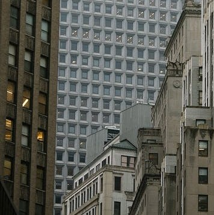
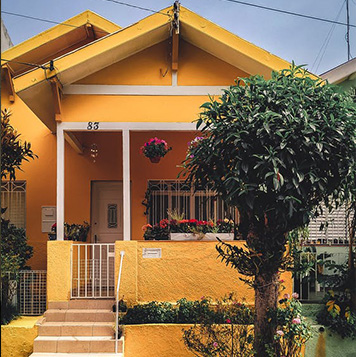

Transforming Neighborhoods
There are many reasons why we transform neighborhoods, but the most important one is to improve the quality of life for its residents. By bringing in new businesses, improving infrastructure, and creating a more walkable and bike-friendly environment, we can make these neighborhoods more livable and attractive places to live. This not only benefits the current residents, but also helps to attract new ones who will bring energy and vitality to the community.

Positive environments with better living conditions
There is no question that art can change a neighborhood. A well-placed mural or sculpture can add beauty and life to an area that was once dull and lifeless. Art can encourage people to come together and interact with one another. In addition, art can be used as a tool for social activism, raising awareness about important issues and inspiring people to take action. Ultimately, art has the power to transform neighborhoods for the better, making them more vibrant and welcoming places to live.

Changing Lives
There is a lot of evidence to suggest that good housing can change lives. A stable, safe and affordable home provides the foundation for individuals and families to thrive both socially and economically. It is a place where children can grow up healthy and learn; adults can find stability in difficult times; and communities can come together to build a better future.